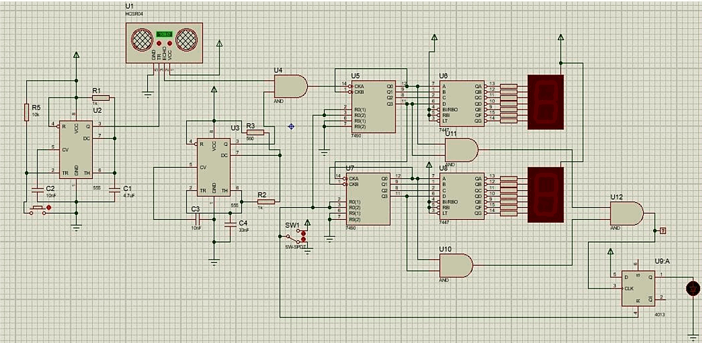

ls ~/projects
Projects
Wearable sensing, embedded firmware, race-car telemetry and digital logic — projects connecting physical measurements to useful data and control.
-
01

Solaris Telemetry — Data Logger & Graph
A solar race team's ground-station app: it reads telemetry from a USB-connected LoRa receiver, displays live readings, and saves them for later analysis. -
02

Smart Sportswear — BLE ECG & Motion Sensor Node
A wearable prototype that measures heart activity and movement through sensors integrated into a shirt, then sends the readings wirelessly to a phone. -
03

Quadruped Spider Robot — Webots Gait Simulation
A four-legged walking robot I modelled and simulated in Webots for a robotics course — a Python controller coordinates the leg movements through a state machine. -
04

Discrete-Logic Rangefinder — No Microcontroller
A distance meter that shows how far away something is on a two-digit display — built entirely from basic logic chips, with no microcontroller or code anywhere in it.